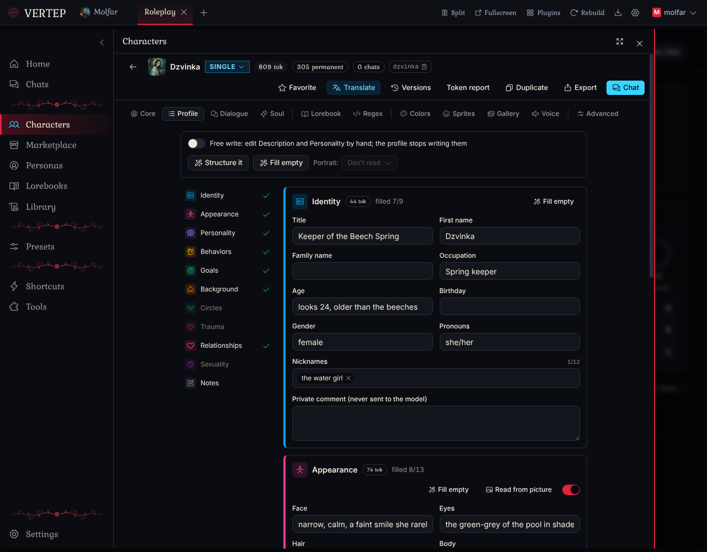
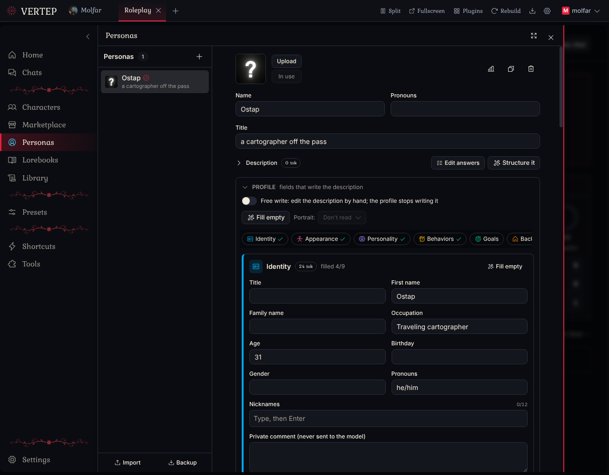
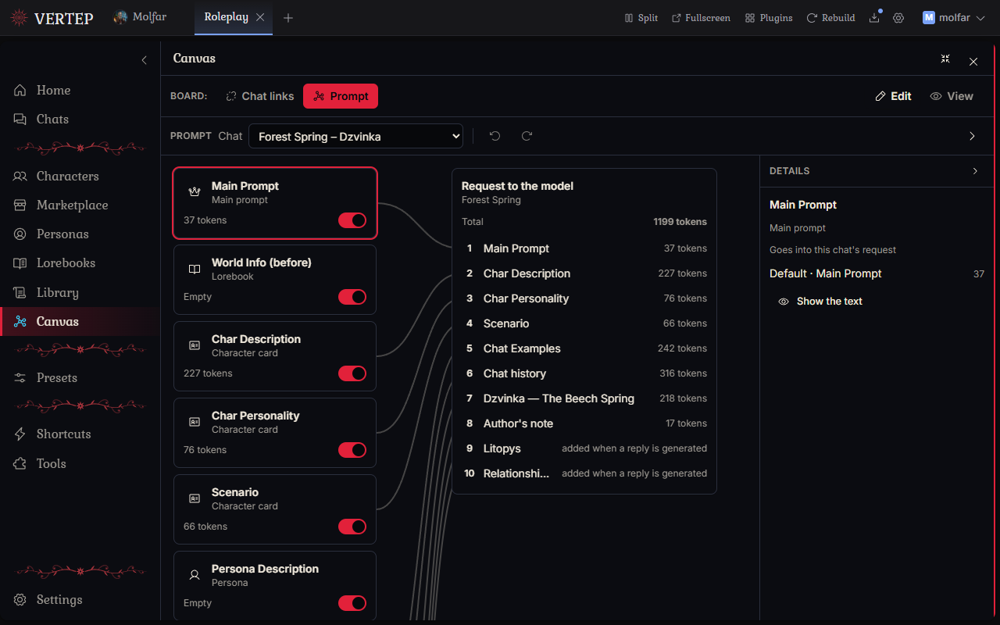
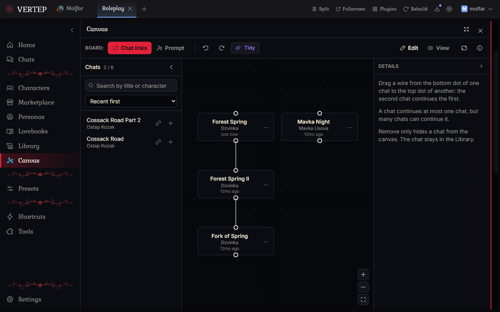
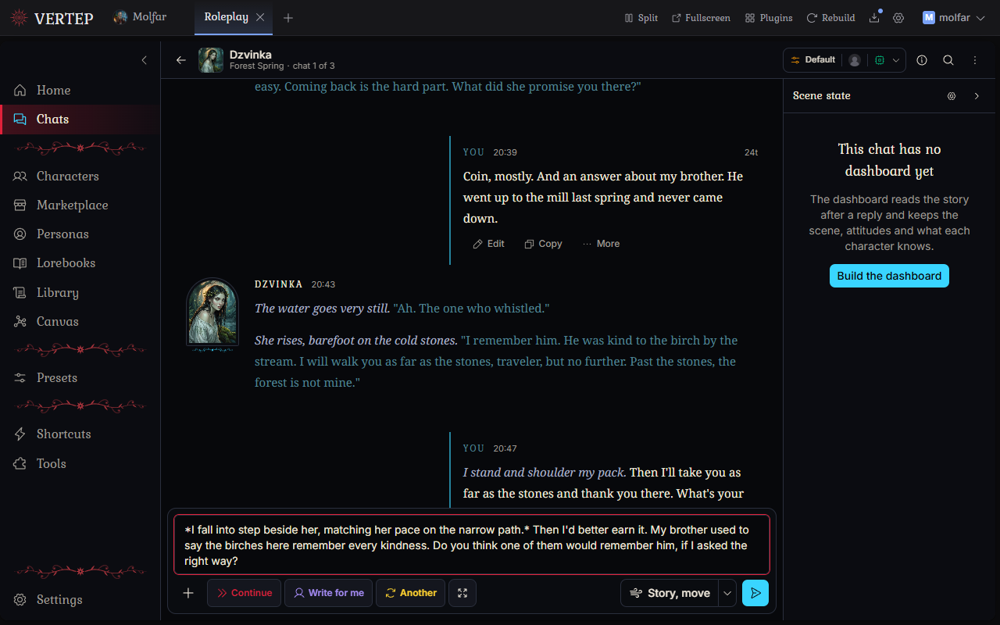
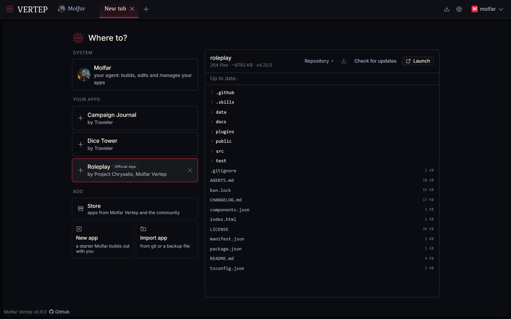
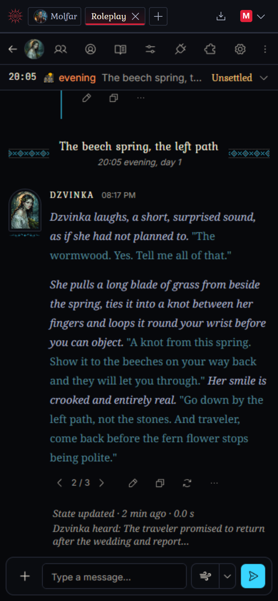
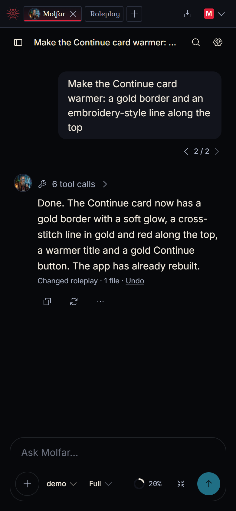

Features
An agent who changes the app when you ask, a Roleplay app with the usual things and a few unusual ones, and everything on your own machine.
Molfar, the agent inside
He is the agent that lives inside, an old Carpathian sorcerer by temper, and he can change the app itself. Every app here is a folder of plain files. Tell Molfar what bothers you or what you'd like to have, and he edits those files; the screen rebuilds a few seconds later.
Most frontends give you settings. Here you can also say "move this button", "add a dice roll", "make the chat read like a book", "show me who knows what about my character". Small fixes and whole new sections go the same way.
Change it by asking
Each change can be undone
Molfar works in git: every run leaves a checkpoint, and one click brings the code back.
He asks before the big stuff
For large or unclear requests Molfar asks first, with options to pick from. Paths you mark as protected need your yes every time.
Your edits survive updates
When a new version of an app comes out, it is merged with what you changed. If they clash, you choose: keep yours, take theirs, or let Molfar merge them.
Apps can call him too
The Roleplay app has an "Ask Molfar" button that opens him with your request already typed. Nothing is sent until you press Send.
It works with small models
Free models with a 32k window get a lighter prompt automatically, so Molfar still fits.
Make Molfar your own
Skills
A skill is a short instruction for one kind of task: "how I like my character cards", "how lorebooks for this world are written". Write your own, or let Molfar propose one after a task went well; nothing is saved until you say yes.
Projects
Keep your chats with Molfar in projects. A project has its own instructions, skills, memory, files you add (notes, references, images) and a default model, so a chat started there already knows the context. Every installed app is a project too.
Memory
Molfar keeps notes about you and your work between chats, and asks you before writing each one.
The Roleplay app
Roleplay is the first app. The welcome screen offers it on the first start, and new versions come through the Updates button.








There is more in the small details: "Story, move" makes the next reply push the plot instead of just reacting to you; lorebooks match by keywords or by meaning; presets, regex scripts, personas, a data bank for long documents.
On a phone
The same thing on a phone: open it from your computer over Wi-Fi, or install the Android app and run everything on the phone.


Yours, at home
Runs locally
Windows, macOS, Linux, Android, or Docker on a home server. Chats, characters and keys stay in plain files on your disk.
Any model
API keys from the big providers and OpenRouter, subscription sign-ins, or any OpenAI-compatible server, including one on your own machine.
Apps are sandboxed
An app from someone else shows what it wants before install (engine access, network, packages), and an update that wants more stops and asks again.
14 interface languages
Ukrainian among them.
Free software
AGPL-3.0. Molfar Vertep began as a fork of Chrysalis Engine by ProjectChrysalis and has gone its own way since.
Sync through your own Google Drive
New in 1.1.0. Your device talks to Google directly, and the app can see only the files it made. See the privacy policy.